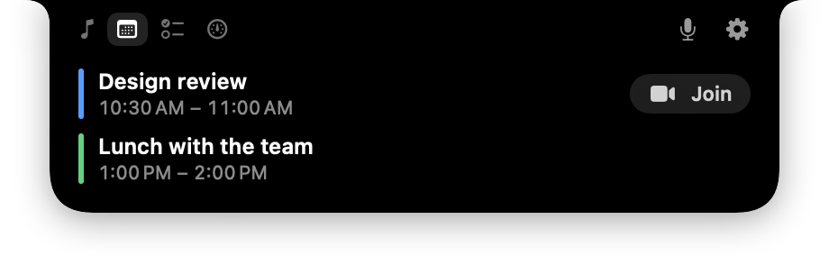
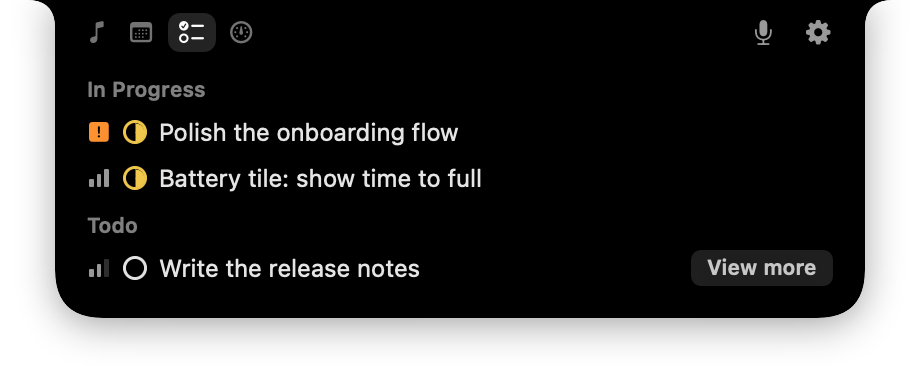
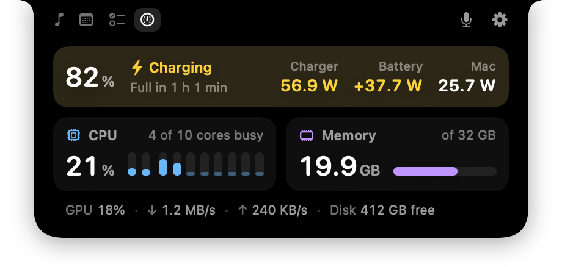
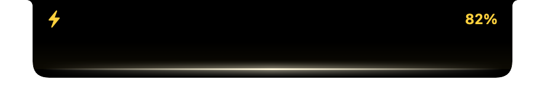
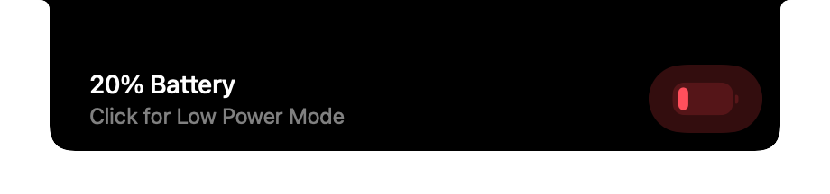
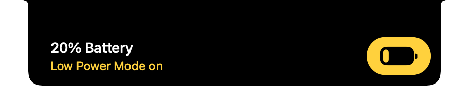

Now playing
Now playing
Music or Spotify, with artwork, controls and a scrubber. Click the track to jump to the app.

Shows Music, Spotify, Calendar, Linear, your Mac and more →
Free and open source. macOS 26 or later.
A black notch in the middle of your menu bar.
Move the pointer to the notch: the island opens on what's playing.
Music or Spotify, with artwork, controls and a scrubber. Click the track to jump to the app.
Your next events today and tomorrow, with a Join button for Zoom, Meet, Teams, Webex and FaceTime.

Your Linear issues for this cycle. Press ⌥ Space to dictate a note; it's understood on your Mac and you review every change.

Battery and charger, per-core CPU, memory, GPU, network and disk. Sampled only while you look.

No new accounts and no setup beyond the permissions each part needs. Turn off anything you don't want.
Music and Spotify. When Spotify plays on a speaker or TV, the volume keys turn that up.
Every calendar in the Calendar app: iCloud, Google, Exchange. Meetings get a countdown.
Linear with your own API key, kept in your keychain. Voice notes run on device.
Battery, charger watts, CPU, memory, GPU, network and disk, at a glance.
Clove has no server of its own and collects nothing. Your calendar and music stay on your Mac. If you connect Linear, your key lives in your keychain and goes only to Linear.
When something happens, the island grows beside the notch for a moment, then gets out of the way. Every popup is the same width as the open island, so nothing jumps around.





Plug in and gold light falls through the island. The System page shows the charger's watts and the time to full.
At 20 % and 10 %, a card offers Low Power Mode, and turns gold once it's on.
When Spotify plays on another device, the volume keys control that device.
A countdown before calls with a link, and a nudge when a Linear issue is due.
Clove is MIT-licensed Swift with no third-party dependencies. Read it, build it, change it.
SwiftUI and AppKit, one folder per feature.
Tell us what happened and on which Mac.
Ideas for new activities and pages are welcome.
What changed in each version.
$ git clone https://github.com/sriramkansala/clove $ cd clove $ scripts/build.sh --direct --install BUILD OK -> build/Direct/Clove.app INSTALLED -> /Applications/Clove.app
Have another question? Ask on GitHub.
Yes. Clove is free, with no in-app purchases, no account and no ads. The source is MIT-licensed.
Any Mac on macOS 26 or later. It's made for MacBooks with a notch; on other displays the island sits at the top centre of the menu bar. Voice notes need a Mac with Apple Intelligence.
They're the same app. The download can also take over the brightness keys, read live power figures from the battery, and switch Low Power Mode on in one click through a small helper you allow once. The App Store version opens Battery settings for that instead.
Each one the first time a feature needs it: Calendars for your events, Automation to read and control Music or Spotify, Input Monitoring and Accessibility to handle the volume keys, and the microphone for voice notes. Everything else works without them.
No. Clove has no analytics and no server of its own. See the privacy policy for exactly what it reads and where anything goes.
Create a personal API key in Linear (Settings › Security & access) and paste it into Clove's Settings. Clove checks it with Linear and keeps it in your keychain.
Quit Clove from its menu bar icon and move it to the Trash. If you used one-click Low Power Mode in the download version, also turn off its helper in System Settings › General › Login Items.